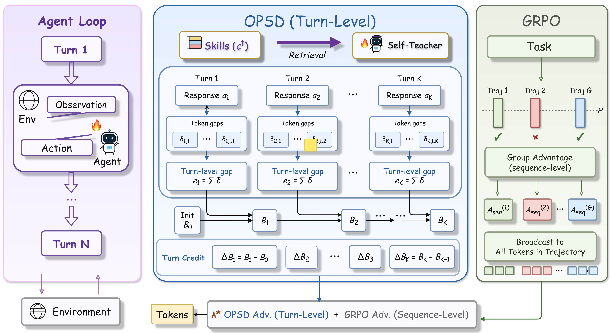
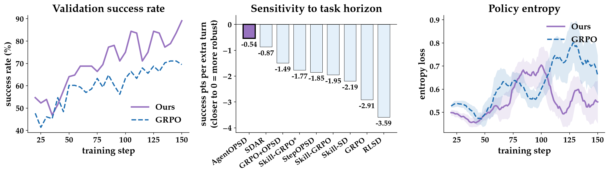

Technical Deep Dive · Agentic RL · Credit Assignment
AgentOPSD：用递归自蒸馏给长轨迹分配 turn-level credit
长时序 Agent 的失败往往由少数关键决策决定，但 GRPO 会把同一个终局 advantage 广播给整条轨迹。AgentOPSD 用一个训练期可见 skill 的 self-teacher 重新评分 student 已执行的动作，把概率差聚合成每轮 evidence，再通过递归 success belief 判断这一轮究竟改变了多少结果预期。它不是新 Agent 架构，而是一套保守的 advantage reshaping 方法。
0. 一句话结论 #
AgentOPSD 解决长时序 Agent RL 中“整条轨迹只有一个 reward，无法判断哪一轮关键”的问题：它将带 privileged skill 的同模型教师与普通 student 的 log-probability gap 聚合为 turn evidence，递归更新一个 success belief，再用 belief revision 对 GRPO advantage 做有界重加权；无需 critic 或额外 rollout，但训练时要增加教师评分，且 credit 的可靠性取决于 skill-conditioned teacher 是否真的更接近成功策略。
核心 insight：一个 turn 的 credit 不应该只由它自己的局部 signal 决定，而应该由它让“最终会成功”的当前判断改变了多少决定。AgentOPSD 的贡献不是创造更强 teacher，而是把 teacher signal 从局部概率差改造成历史相关、环境 turn 对齐的权重。
terminal verifier reward
privileged self-teacher gap
recursive history state
bounded multiplier
= turn-aware GRPO update1. 论文定位：它改的是 credit assignment，不是 Agent backbone #
设任务为 $x$，初始观察为 $o_0$。第 $k$ 轮时，Agent 根据可见交互历史 $s_k$ 生成动作 $a_k$，环境执行后返回新观察。长度为 $K$ 的轨迹只在结束时获得二值奖励 $R(\tau)$。
GRPO 对同一个任务采样 $G$ 条轨迹，并构造 sequence-level advantage：
问题是 $A_{\mathrm{seq}}^{(i)}$ 被广播给轨迹 $i$ 的所有 token：一次关键搜索、一次错误购买和若干格式性 reasoning 都得到同样 credit。轨迹越长，这种统一广播越粗糙。
| 方法 | 局部监督来源 | 是否历史相关 | 最终更新方向 |
|---|---|---|---|
| GRPO | 只有终局 reward | 否 | Verifier |
| OPSD / Skill-SD | teacher-student token gap | 否 | Distillation / mixed objective |
| StepOPSD | turn-level local gap | 否 | 局部 teacher signal |
| RLSD | bounded local gap coefficient | 否 | Verifier |
| AgentOPSD | recursive belief revision | 是 | Verifier，teacher 只改幅度 |
因此它最准确的定位是：privileged-skill-guided、critic-free、turn-level advantage reshaping。推理模型仍是普通 Qwen2.5 Agent。
2. 方法总览：从 token gap 到递归 success belief #
For each task x:
student without skill → sample G=8 multi-turn trajectories
verifier → terminal rewards R[1:G]
GRPO → sequence advantages A_seq[1:G]
For each generated turn k:
same model + retrieved skill c+ → rescore the same action tokens
teacher_lp - student_lp → delta[k, t]
sum over response tokens → turn evidence e[k]
For each trajectory:
group success rate → prior B0
recursive log-odds update → B1 ... BK
consecutive belief difference → ΔB1 ... ΔBK
bounded multiplier → turn advantages Ã1 ... ÃK
standard clipped GRPO update
| 对象 | 实现形状 | 含义 |
|---|---|---|
| student / teacher log-probs | [N_turn, L_max] | 同一批 student-generated token 的两次评分 |
| response mask | [N_turn, L_max] | 屏蔽 padding 与非 response token |
| turn evidence | [N_turn] | 一轮内所有 token gap 的和 |
| belief sequence | 每条轨迹 [K] | 历史 evidence 下的相对 success support |
| turn advantage | [N_turn] | 每轮独立的 GRPO 更新幅度 |
| token advantage | [N_turn, L_max] | 同一轮 token 继承相同 turn advantage |
3. 关键创新点 #
3.1 Self-teacher gap：让 skill 只提供训练期证据
旧方法为什么不行：终局 reward 无法在轨迹内部区分动作。额外训练 critic 需要 value targets；对每个 turn 分叉 rollout 又非常昂贵。
它怎么改：Student 不看 skill；teacher 与 student 共用参数，但额外看到从 SkillRL SkillBank 检索出的 task-specific skill $c^+$。Teacher 不生成另一条轨迹，而是重新评分 student 已经生成的同一个 token：
一轮内求和得到：
为什么可能有效：如果 skill 描述了可靠子目标与行动模式，那么一个在 skill 条件下概率明显上升的动作，更像掌握正确策略时会采取的动作。
代价与限制：它依赖两个强假设：skill-conditioned branch 接近 success-conditional policy；无 skill branch 接近背景或 failure-dominated policy。论文只需要 gap 的 sign 与 ranking，不要求它是校准概率，但 skill 错误仍会直接污染 credit。
3.2 Recursive belief：相同局部 evidence 在不同历史下不等价
旧方法为什么不行：StepOPSD 之类的方法只看当前 $e_k$。如果前几轮已经几乎确定成功，后续重复正确动作不应与早期转折点获得同样 credit。
它怎么改：先用组内成功率作为 prior，再在 log-odds 空间递归累积 evidence：
论文设置 $\gamma=0.95$，让旧 evidence 逐渐衰减。第 $k$ 轮的 credit proxy 是：
一阶近似揭示了机制：
$B(1-B)$ 是隐式 saturation gate：成功仍不确定时，新 evidence 影响最大；信念接近 0 或 1 时，相同 evidence 会被抑制。这就是“局部 gap 不是 sequential credit”的具体含义。
3.3 Outcome alignment：Verifier 决定方向，teacher 只决定相对强弱
成功轨迹中，向上修正 belief 的 turn 与终局一致；失败轨迹中，向下修正才与终局一致。因此：
轨迹内对 $q_k$ 做标准化得到 $z_k$。这样，在成功轨迹里提升 success belief 的 turn 被放大；在失败轨迹里降低 success belief 的 turn 被放大。与结果矛盾的 revision 被缩小，但不会反转终局 reward 给出的梯度方向。
3.4 Bounded reshaping：实际只在 GRPO 周围微调 ±10%
论文统一使用 $b=0.2,\lambda=0.5$，因此 $w_k\in[0.8,1.2]$，最终 advantage multiplier 仅在 $[0.9,1.1]$。这不是用 teacher 取代 verifier，而是在可靠的 GRPO direction 周围做保守 credit redistribution。
稳定性的真正来源：无论 belief proxy 多不准确，只要 $b<1$，最终 multiplier 始终为正，$\operatorname{sign}(\widetilde A_k)=\operatorname{sign}(A_{\mathrm{seq}})$。当 $\lambda=0$ 时方法严格退化为 GRPO。
4. 训练和推理流程 #
4.1 一次训练 iteration
- 对每个任务用当前 student policy on-policy 采样 $G=8$ 条多轮轨迹。
- ALFWorld/WebShop/Search-QA 环境 verifier 返回终局 reward。
- 计算标准 GRPO sequence advantage，先确定每条轨迹总体增强还是削弱。
- 根据任务关键词选择 general skill 与 task-specific Markdown skill。
- 给相同模型的 teacher prompt 插入 skill，对 student response 做额外 log-prob scoring。
- 把 token gap 聚合到 turn，按
traj_uid与turn_step排序递归 belief。 - 计算 bounded turn advantages，并广播给各 turn 的有效 response tokens。
- 使用 PPO clipping 与 reference-policy KL 更新 actor；没有独立 distillation loss。
4.2 Teacher forcing 到底发生在哪里
Teacher 不生成新 action，也不要求 student 模仿 teacher 的 argmax。两条 branch 对 student rollout 的同一个 $y_{k,t}$ 评分，因此 gap 是 on-policy likelihood contrast。Teacher log-prob 被 detach，只通过 advantage 影响 policy gradient。
4.3 推理
task prompt + interaction history
→ trained Qwen2.5 agent
→ reasoning + environment action
No skill retrieval
No teacher branch
No belief state
No additional scoring pass
No critic所以部署成本与普通 fine-tuned Agent 基本相同。增加的计算全部发生在训练阶段：对 rollout token 做一次 skill-conditioned teacher scoring，再执行轻量的逐 turn 标量递归。
5. 公式与实现逐项对齐 #
| 论文符号 | 实现对象 | 代码操作 |
|---|---|---|
| $\delta_{k,t}$ | delta_t | (teacher_log_probs - student_log_probs) * response_mask |
| $e_k$ | delta_turn | 沿 response length 求和 |
| $B_0$ | v0_per_traj | 同 task 的 GRPO group success mean，按 trajectory 去重 |
| $c_k$ | cum_d | gamma * acc + evidence |
| $B_k$ | V_k | sigmoid(logit_v0 + cum_d) |
| $\Delta B_k$ | A_seq 局部变量 | 当前 belief 减前一 belief |
| $\widetilde A_k$ | A_row | GRPO advantage × bounded multiplier |
核心实现位于 verl/trainer/ppo/opsd_utils.py。训练循环位于 opsd_ray_trainer.py：先按标准流程计算 GRPO advantage，再用 OPSD advantage 覆盖 batch.batch["advantages"]，最后复用原 actor update。
实现细节：当前 batch 的每一行对应一个环境 turn；同一 episode 的行共享 traj_uid。Turn recursion 必须先按 turn_step 排序，然后将一个 turn scalar 广播到该行所有有效 token。
Teacher skill：SkillProvider 读取 skills/{alfworld,search,webshop} 下的 Markdown 和 skill_mapping.json。ALFWorld 与 WebShop 使用关键词映射 task type；脚本设置 skill_all=false，不是把全部 skill 一次性塞给 teacher。
6. 训练与推理对齐检查 #
| 检查项 | 训练 | 推理 | 判断 |
|---|---|---|---|
| Agent 输入 | Student rollout 不看 skill | 不看 skill | 主输入分布对齐 |
| Privileged skill | 只给 detached teacher | 不存在 | 通过参数蒸馏，存在 teacher-quality 依赖 |
| 动作采样 | Student on-policy，温度 1.0 | 验证温度 0.4 | 常见 sampling mismatch |
| Reward / belief | 终局后 hindsight 计算 | 不存在 | 仅训练期 credit，不是在线 planner |
| 历史窗口 | 环境限制 50/15/4 turns | 相同环境 prompt 模板 | 未验证超训练 horizon |
| Teacher action | 重评分 student action | Student 自行生成 | 没有 action target mismatch |
最关键的 mismatch：训练期能用任务类别检索 procedural skill，测试时没有。方法希望 student 将这种 skill-induced ranking 内化进参数，但没有证明面对 SkillBank 未覆盖的新任务时仍能得到可靠提升。
7. 实验复盘：结果支持了什么，没有支持什么 #
7.1 Benchmarks
- ALFWorld：文本具身家庭任务，6 类任务，最多 50 turns，指标为 success rate。
- WebShop：搜索、筛选属性与购买，固定 128 个 validation tasks，最多 15 turns，指标为 partial score 与 exact success。
- Search-QA：NQ/HotpotQA 训练域，加 TriviaQA、PopQA、2Wiki、MuSiQue、Bamboogle held-out，最多 4 turns，指标为 accuracy。
7.2 主结果
| Backbone | 方法 | ALFWorld Avg | Search-QA Avg | WebShop Score | WebShop Acc |
|---|---|---|---|---|---|
| Qwen2.5-3B | GRPO | 75.0 | 36.4 | 79.8 | 63.3 |
| Qwen2.5-3B | SDAR | 84.4 | 43.4 | 85.0 | 68.0 |
| Qwen2.5-3B | AgentOPSD | 84.4 | 46.7 | 90.4 | 69.5 |
| Qwen2.5-7B | GRPO | 81.2 | 42.0 | 80.9 | 72.6 |
| Qwen2.5-7B | SDAR | 85.9 | 49.0 | 89.4 | 82.8 |
| Qwen2.5-7B | AgentOPSD | 89.1 | 49.2 | 90.2 | 79.7 |
AgentOPSD 相对 GRPO 的提升稳定，尤其在 ALFWorld 与 WebShop partial score 上明显。但它不是所有指标最优：Qwen2.5-7B 的 WebShop exact success 为 79.7，低于 SDAR 的 82.8；Search-QA 对 SDAR 只有 0.2 个点优势。
7.3 消融
| 设置 | ALFWorld 7B | 说明 |
|---|---|---|
| AgentOPSD full | 89.1 | turn-level、recursive、signed、empirical prior |
| token-level accumulation | 85.9 | 环境反馈与完整 action turn 对齐更合理 |
| raw local gap 替代 $\Delta B_k$ | 82.8 | 支持历史递归而非孤立 gap |
| 只保留 $|\Delta B_k|$ | 80.5 | outcome-consistent direction 很重要 |
| 移除 empirical $B_0$ | 78.9 | 组成功率 prior 是最强组件之一 |
这组消融足以支持“turn aggregation、history recursion、outcome alignment 都有用”，但仍未证明 $\Delta B_k$ 找到的就是因果 pivotal turn。
7.4 Horizon claim 的证据强度
论文报告 ALFWorld 每增加一轮，AgentOPSD 成功率斜率为 -0.54 points，GRPO 为 -2.91，RLSD 为 -3.59。这个结果与动机一致，但它是不同子任务类别之间的回归，而且 mean turns 只统计成功 episode；task difficulty、category 与 horizon 混在一起，不能当作严格的长度干预实验。

8. 批判与可复现清单 #
8.1 “Bayesian”是解释框架，不是校准概率模型
理想 Bayes factor 需要 $p(a_k\mid s_k,C)$ 与 $p(a_k\mid s_k,\neg C)$。实际分子是 skill-conditioned self-teacher，分母是普通 student marginal。论文附录要求：
- A1：$\pi(a\mid s,c^+)\approx p(a\mid s,C)$；
- A2：成功率较低时，$\pi(a\mid s)\approx p(a\mid s,\neg C)$。
这些假设让 gap 的 sign/ranking 有合理解释，但不保证 $B_k$ 是真实 success probability。论文也明确把它称为 relative support。
8.2 Teacher gap 天然有负漂移
动作来自 student 时：
因此直接累积 gap 会系统性地把 belief 向下推。代码注释也明确将其称为 negative-drift saturation，并实现了 centering、decay、tether 等诊断路径。论文 full method 依靠 $\gamma=0.95$、sigmoid gate、轨迹内标准化和有界 multiplier 控制这一问题，而不是消除它。
8.3 Turn evidence 混入 reasoning length
代码将一轮全部有效 response token 的 gap 直接求和，包括 <think> 和最终 <action>。长 reasoning 往往产生更大绝对 gap，所以所谓 pivotality 可能部分是在检测 verbosity 或 teacher-student 风格差异。更干净的对照应比较：
- sum gap 与 mean gap；
- 全 response 与仅 action span；
- 按 token 数或 entropy 标准化的 evidence。
8.4 没有 counterfactual ground truth
真正的 turn contribution 应在固定 prefix 后替换或删除动作，再对后续 continuation 边际化。AgentOPSD 没有直接测这种 counterfactual value，只展示 policy performance 消融。下一步应抽样关键 turn 做 branch rollout，比较 $\Delta B_k$ 与真实 $\Delta Q_k$ 的 rank correlation。
8.5 论文与当前代码存在配置差异
| 项目 | 论文 | 2026-08-18 当前 main 脚本 |
|---|---|---|
| Granularity | 三个环境统一 turn-level | ALFWorld=turn；WebShop/Search=token |
| Evidence decay | $\gamma=0.95$ | 脚本未传参；代码默认 1.0 |
| KL coefficient | 统一 0.01 | Search=0.001，其余 0.01 |
| Seeds | 未报告均值与误差条 | 环境脚本固定 seed=0 |
复现前必须做的事：固定仓库 commit，显式设置 granularity=turn、belief_decay_gamma=0.95、mult_lambda=0.5、mult_band=0.2、signed=true，并向作者确认 Search/WebShop 的论文结果究竟来自哪套配置。
| 训练项 | 论文设置 |
|---|---|
| Backbone | Qwen2.5-3B/7B-Instruct |
| Learning rate | $10^{-6}$ |
| Group size | 8 trajectories per task |
| PPO clip | $\epsilon_{low}=0.2,\epsilon_{high}=0.24$ |
| KL coefficient | 0.01 toward reference policy |
| Reshaping | $\lambda=0.5,b=0.2,\gamma=0.95$ |
| Optimizer details | 1 PPO epoch/update，grad clip 1.0，entropy coefficient 0.001，FSDP |
| Training steps | 150 |
| Max turns | ALFWorld 50，WebShop 15，Search-QA 4 |
| Train batch | 16 / 16 / 128 |
| Train / val temperature | 1.0 / 0.4 |
| Hardware | ALFWorld 8 GPUs，WebShop 2，Search-QA 4 |
9. 可能的改进方向 #
| 改动点 | 预期收益 | 风险 | 验证实验 |
|---|---|---|---|
| 只聚合 action span gap | 减少 reasoning 长度与风格 confound | 忽略真正关键的规划 token | all-token / action-only / think-only 三组消融 |
| 按长度、entropy 或 KL 校准 $e_k$ | 缓解负漂移和长 response 偏差 | 削弱强 evidence | 比较 reward、belief saturation 与 rank correlation |
| 少量 branch rollout 校准 belief | 让 pivotal turn 更接近因果贡献 | 训练成本增加 | 仅对 top-k revision turn 分叉 continuation |
| 学习式 skill retriever | 减少 keyword mapping 错配 | retriever 与 policy 联合偏置 | keyword / embedding / oracle skill 对照 |
| uncertainty-aware multiplier band | teacher 不可靠时更接近 GRPO | 模型可能始终保守 | 按 teacher ensemble disagreement 调整 $b$ |
| 显式 progress belief | 把 success belief 扩为 subgoal progress state | 需要程序或步骤标注 | ALFWorld predicate completion 与 WebShop constraint coverage |
可迁移的设计模式：用外部先验产生局部 ranking signal，保留真实 verifier 决定优化方向，并以严格有界的正 multiplier 调整 credit。这个模式可以迁移到 GUI Agent、代码 Agent 和有终局成功判据的机器人长任务。
10. 速读备忘卡 #
- AgentOPSD 是 credit assignment 方法，不是新 Agent backbone。
- GRPO 的问题是同一 trajectory 的所有 turn 共享一个 advantage。
- Teacher 与 student 共用参数，区别是 teacher 额外看到训练期 skill。
- Teacher 只重新评分 student 已生成动作，不产生额外 rollout。
- Token log-prob gap 在一轮内求和，得到 turn evidence。
- 组成功率 $\bar R$ 初始化 success-belief prior。
- Evidence 在 log-odds 空间递归累积，$\gamma=0.95$。
- 真正用于 credit 的是 $\Delta B_k$，不是局部 $e_k$。
- Verifier 决定 advantage sign，teacher 只调整相对幅度。
- $b=0.2,\lambda=0.5$ 意味着最终只做 ±10% 重加权。
- 训练增加一次 teacher scoring；推理没有额外模块或 skill。
- ALFWorld 7B 达到 89.1%，GRPO 为 81.2%。
- Search-QA 对 SDAR 的优势很小，WebShop exact success 也并非最优。
- Bayesian belief 只是 relative support，不是校准成功率。
- Gap 存在 $-\mathrm{KL}$ 负漂移和 response-length confound。
- 论文尚未用 counterfactual rollout 验证 pivotal turn。
- 当前仓库的 token/turn 与 $\gamma$ 配置和论文不完全一致。
一句话记忆：AgentOPSD 用 privileged teacher 判断“哪一轮更像关键证据”，但始终让终局 verifier 决定“整条轨迹该奖还是该罚”。